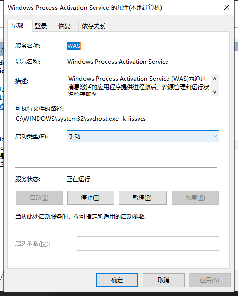
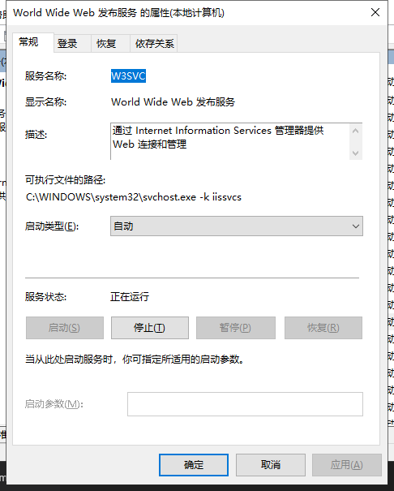
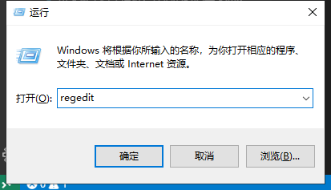
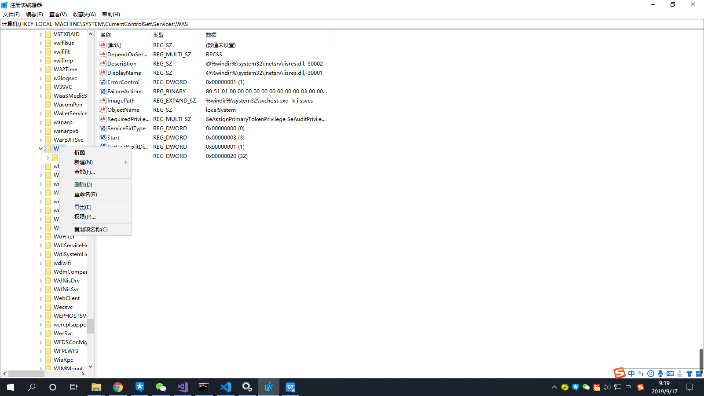
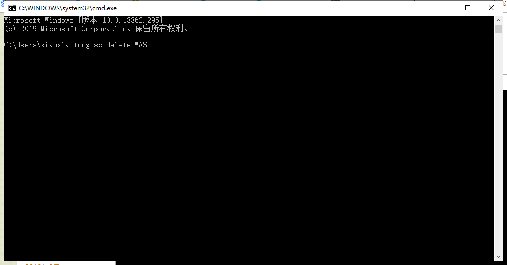
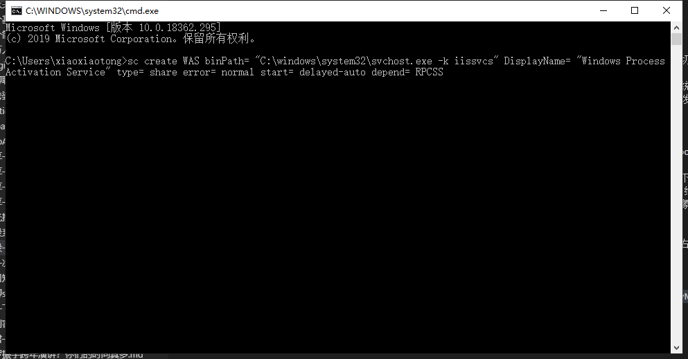
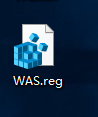

前几天自己的笔记本更新到了最新版的Windows10系统，然后昨天打开电脑，运行之前的项目发现运行失败，切换到iisexpress后运行成功，就怀疑是iis出问题了，开始还以为是部署出现了问题，后来发现，原来是整个iis启动不起来了；
然后也是百度了一番，发现有个服务叫WAS(Windows Process Activation Service)，无法启动，提示“系统找不到指定路径”（昨天问题发生的时候光顾着解决去了，没有截图），该服务是启动iis服务的依赖项，iis服务在services里指向的是W3SVC服务（World Wide Web发布服务），而该服务依赖的模块就是WAS，因此要启动该服务，首先要把WAS服务启动，两个服务在services的截图如下


出现该问题以后我百度了一下解决方案，包括什么在命令行输入一些什么指令，还有说是C盘少一个什么appPools文件夹之类的解决办法，在我这都不奏效，后来就干脆把iis直接卸载然后重新安装了一遍，结果还是保一样的错误；
然后就想着是不是更新系统后有什么环境没有安装完全，然后又检测了一下，发现果然有，就又重新安装了一下，重启电脑后发现还是不行，
后来看到一个靠谱的方案，传送门：https://blog.csdn.net/wzmde007/article/details/88327278，给出的办法是，找一台系统配置相同的电脑，将相关注册表配置信息导出，然后在出错电脑上注册一遍，其实原博客里给出的解决步骤已经够详细了，单位了加深一下印象，我在重复一下
1.打开注册表编辑器

2.以此在左侧树形结构中找到，HKEY_LOCAL_MACHINE\SYSTEM\CurrentControlSet\Services\WAS，然后右击，选择导出

然后回到出问题的电脑，删除原有的WAS服务（sc delete WAS）

在重新注册， (sc create WAS binPath= “C:\windows\system32\svchost.exe -k iissvcs” DisplayName= “Windows Process Activation Service” type= share error= normal start= delayed-auto depend= RPCSS)

注意，以上两步操作，需要以管理员模式打开命令提示符窗口
操作完成后，将导出的注册表，拷贝到问题主机，然后双击执行，

执行该步骤操作是，如果电脑安装有杀毒软件，会出现拦截提示，直接允许操作就好
完成后，问题就解决了，打开iis，发现iis也已经是启动状态了，相关服务也都正常运行了；